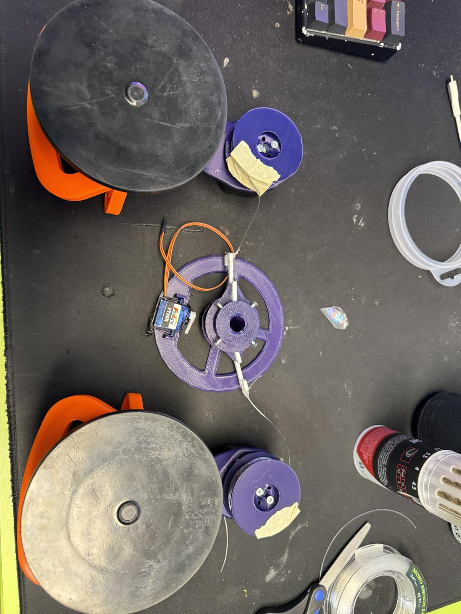
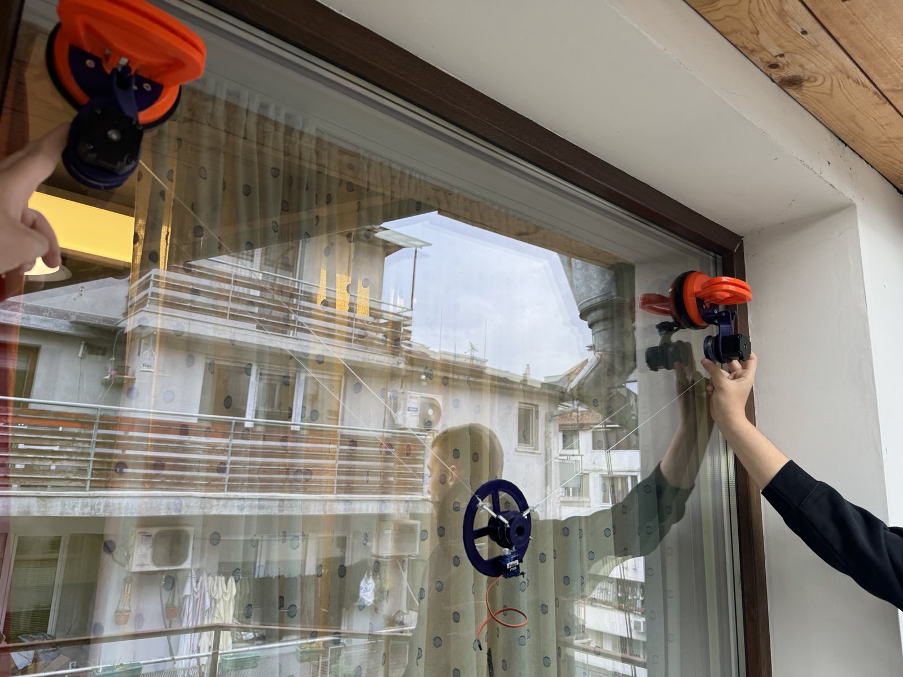
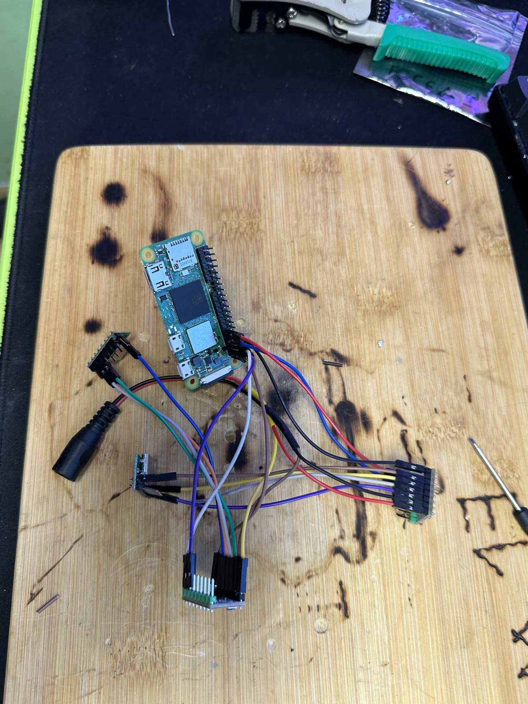
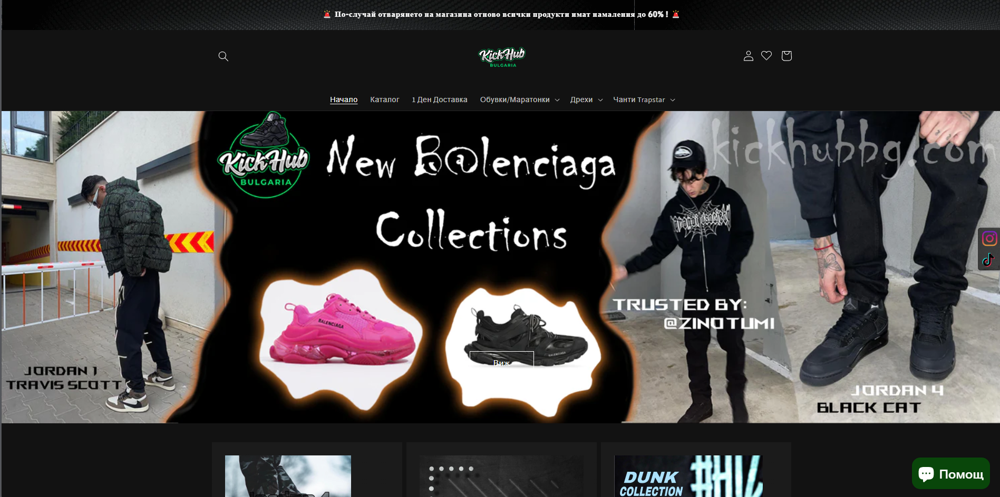
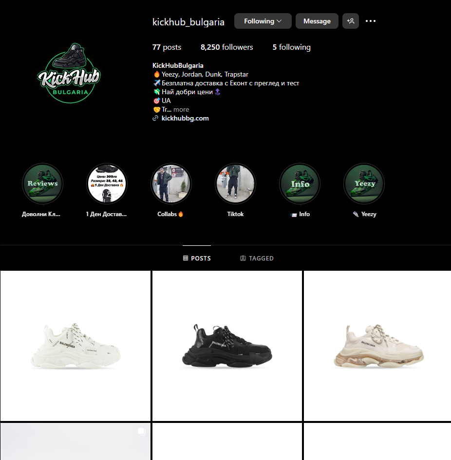

Проект - Derabot Github
През април 2024 г. стартирах проект, наречен „Derabot“, с моите съученици Радослав Митов и Димитър Илиев. Целта ни е да създадем роботизирана система, способна да рисува върху различни повърхности.
Основни характеристики
- Многостранно рисуване: Derabot се адаптира към различни повърхности, подходящ за класни стаи, стени и платна.
- Бързо закрепване: Закрепва се сигурно с две вакуумни скоби за по-малко от две минути.
- Удобно управление: Работи чрез мобилен графичен потребителски интерфейс (GUI) за лесно управление от смартфон.
Бъдещи приложения
- Образование: За визуални помощни средства и интерактивно рисуване.
- Строителство: За маркировка и художествени подобрения.
- Артистични проекти: За съвместни инсталации и обществени проекти.
* Забележка: Кодът за проекта в GitHub е взаимстван от проекта на "Andy wise" - Drawbot, макар и значително променен поради различни части.
  Проект - Kickhubbg.com
Започнах да разработвам Kickhub Bulgaria през Януари 2023. От тогава аз и екипа сме обслужили над 300 доволни клиента. Целта ни е всеки да има достъп до любимите му обувки, но на по-достъпни цени.
 